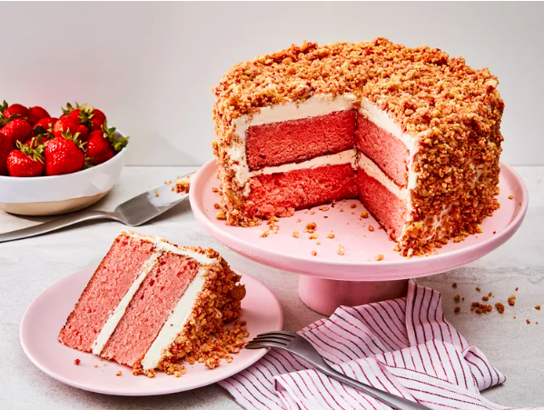
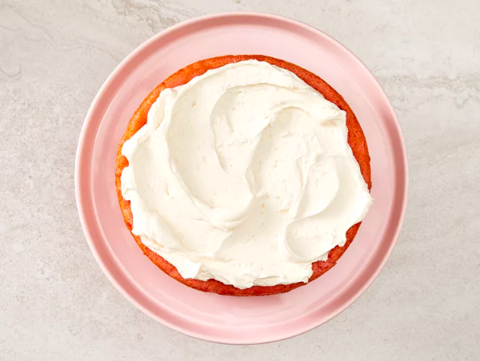
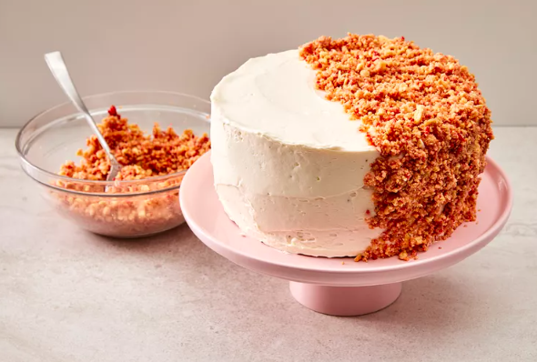
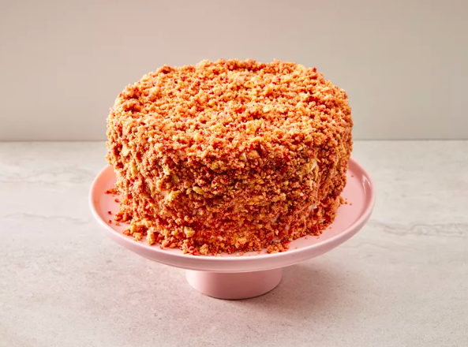

Strawberry Crunch Cake

Description
This strawberry cake with buttercream icing and crumbles is light, tender, and is reminiscent of a strawberry ice
cream bar.
Ingredients
Cake
- baking spray with flour
- 2 ½ cups all-purpose flour
- 3 tablespoons strawberry-flavored gelatin, such as Jell-O (from 1 [3 oz.] package)
- 1 teaspoon baking powder
- 1 teaspoon kosher salt
- ½ teaspoon baking soda
- 1 cup unsalted butter, softened
- 2 cups granulated sugar
- 3 large eggs
- 2 teaspoons vanilla extract
- 1 ½ cups whole buttermilk
Frosting
- 1 ½ cups unsalted butter, softened
- ¼ teaspoon kosher salt
- 1 tablespoon vanilla extract
- 4 cups powdered sugar, sifted
- 2 tablespoons heavy cream, or more as needed
Crumble
- 25 golden Oreo cookies
- ⅔ cup freeze-dried strawberries
- ⅛ teaspoon kosher salt
- 4 tablespoons melted unsalted butter
How To Prepare The Strawberry Crunch Cake
Step 1
-
Preheat the oven to 350 degrees F (175 degrees C). Coat 2 (8-inch) round cake pans with baking spray
with flour and line bottoms with parchment.
Step 2
-
Whisk together flour, gelatin, baking powder, salt, and baking soda in a bowl.
Step 3
-
Beat butter at medium speed until creamy, 2 to 3 minutes in the bowl of a stand mixer fitted with the
paddle attachment. Gradually add sugar, beating until light and fluffy, about 3 minutes. Add eggs, 1
at a time, beating on low speed and scraping down sides of bowl as needed, until just combined. Beat
in vanilla.

Step 4
-
Add flour mixture in 3 additions alternately with buttermilk, beginning and ending with flour mixture
and beating on low speed just until combined after each addition. Divide batter evenly between prepared
pans.
Step 5
-
Bake in the preheated oven until a wooden pick inserted in center comes out clean, about 40 minutes.

Step 6
-
Cool in pans on a wire rack for 10 minutes; remove cakes from pans and cool completely on a wire rack,
1 to 1 1/2 hours.
Step 7
-
For the frosting, add butter and salt to the bowl of a stand mixer fitted with the paddle attachment. Beat
on medium speed until creamy, about 3 minutes. Beat in vanilla.
Step 8
-
Gradually add powdered sugar, alternately with cream, beating on low speed until completely incorporated
and smooth. Increase mixer speed to medium-high and beat until smooth and fluffy, 2 to 3 minutes.

Step 9
-
For the crumble, place cookies, strawberries, and salt in a food processor and pulse until slightly chunky
(bits of strawberry and cookie should still be visible), about 12 pulses. Drizzle in butter and pulse about
5 times to combine.

Step 10
-
Trim tops of cakes with a serrated knife if needed to make flat on top.
Step 11
-
Place 1 cake layer on serving platter; spread evenly with 1 cup frosting. Top with remaining cake layer.

Step 12
-
Spread top and sides of cake with the remaining frosting.

Final Step
-
Sprinkle Crumble over top and sides of cake, pressing lightly to adhere until completely covered. Chill
cake for 1 hour before slicing.

